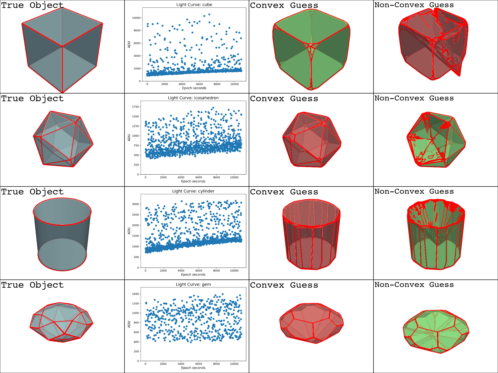
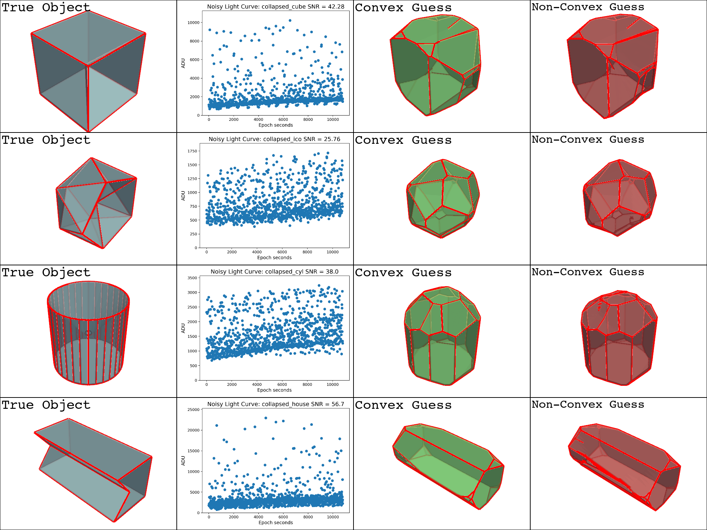

Note
Go to the end to download the full example code
Non-Convex Inversion#
Implementing non-convex inversion using my method from summer 2022 [RF22]

- 


- 


Downloading tiles for N32W106.hgt
| niter |f evals|CG iter| obj func |tr radius | opt | c viol | penalty |barrier param|CG stop|
|-------|-------|-------|-------------|----------|----------|----------|----------|-------------|-------|
| 1 | 1 | 0 | +1.0000e+00 | 1.00e+00 | 2.89e-01 | 9.77e-01 | 1.00e+00 | 1.00e-01 | 0 |
/Users/liamrobinson/Documents/PyLightCurves/lib/python3.10/site-packages/scipy/optimize/_hessian_update_strategy.py:182: UserWarning: delta_grad == 0.0. Check if the approximated function is linear. If the function is linear better results can be obtained by defining the Hessian as zero instead of using quasi-Newton approximations.
warn('delta_grad == 0.0. Check if the approximated '
| 2 | 2 | 1 | +1.4762e+00 | 7.00e+00 | 2.53e-01 | 9.36e-01 | 1.66e+00 | 1.00e-01 | 2 |
| 3 | 3 | 3 | +1.4762e+00 | 7.00e-01 | 2.53e-01 | 9.36e-01 | 1.66e+00 | 1.00e-01 | 2 |
| 4 | 4 | 5 | +2.3067e+00 | 4.90e+00 | 2.26e-01 | 7.36e-01 | 5.61e+00 | 1.00e-01 | 2 |
| 5 | 5 | 10 | +4.7977e+00 | 2.36e+01 | 4.01e-01 | 7.45e-01 | 7.28e+00 | 1.00e-01 | 4 |
| 6 | 6 | 18 | +4.0296e+00 | 2.36e+01 | 3.15e-01 | 9.96e-02 | 7.28e+00 | 1.00e-01 | 4 |
| 7 | 7 | 25 | +3.8573e+00 | 2.36e+01 | 2.87e-01 | 2.30e-03 | 7.28e+00 | 1.00e-01 | 4 |
| 8 | 8 | 31 | +3.8183e+00 | 2.36e+01 | 2.73e-01 | 4.62e-04 | 7.28e+00 | 1.00e-01 | 4 |
| 9 | 10 | 40 | +3.5778e+00 | 2.36e+01 | 1.54e-01 | 3.98e-03 | 7.28e+00 | 1.00e-01 | 4 |
| 10 | 12 | 48 | +3.4701e+00 | 2.36e+01 | 6.75e-02 | 1.30e-03 | 7.28e+00 | 1.00e-01 | 4 |
| 11 | 14 | 54 | +3.4575e+00 | 2.36e+01 | 7.49e-02 | 8.23e-05 | 7.28e+00 | 1.00e-01 | 4 |
| 12 | 15 | 61 | +3.4566e+00 | 2.36e+01 | 8.34e-02 | 4.88e-03 | 7.28e+00 | 1.00e-01 | 4 |
| 13 | 16 | 70 | +3.4622e+00 | 2.36e+01 | 8.80e-02 | 2.44e-03 | 7.28e+00 | 1.00e-01 | 4 |
| 14 | 17 | 79 | +3.4444e+00 | 2.36e+01 | 7.55e-02 | 3.71e-03 | 7.28e+00 | 1.00e-01 | 4 |
| 15 | 19 | 91 | +3.3979e+00 | 2.36e+01 | 5.74e-02 | 6.90e-04 | 7.28e+00 | 1.00e-01 | 4 |
| 16 | 19 | 91 | +3.3979e+00 | 1.18e+02 | 9.38e-02 | 6.90e-04 | 1.00e+00 | 2.00e-02 | 0 |
| 17 | 20 | 99 | +3.3751e+00 | 1.18e+02 | 8.85e-02 | 9.15e-03 | 1.00e+00 | 2.00e-02 | 4 |
| 18 | 21 | 102 | +3.3822e+00 | 1.18e+02 | 8.59e-02 | 3.83e-05 | 1.28e+00 | 2.00e-02 | 4 |
| 19 | 22 | 112 | +3.3598e+00 | 1.18e+02 | 4.39e-02 | 4.98e-03 | 1.28e+00 | 2.00e-02 | 4 |
| 20 | 23 | 118 | +3.3545e+00 | 1.18e+02 | 3.72e-02 | 2.61e-03 | 1.28e+00 | 2.00e-02 | 4 |
| 21 | 24 | 125 | +3.3530e+00 | 1.18e+02 | 3.62e-02 | 7.41e-04 | 1.28e+00 | 2.00e-02 | 4 |
| 22 | 25 | 133 | +3.3501e+00 | 1.18e+02 | 3.06e-02 | 6.35e-04 | 1.28e+00 | 2.00e-02 | 4 |
| 23 | 26 | 141 | +3.3475e+00 | 1.18e+02 | 2.30e-02 | 7.42e-04 | 1.28e+00 | 2.00e-02 | 4 |
| 24 | 27 | 149 | +3.3469e+00 | 1.18e+02 | 1.41e-02 | 4.10e-04 | 1.28e+00 | 2.00e-02 | 4 |
| 25 | 27 | 149 | +3.3469e+00 | 5.91e+02 | 1.79e-02 | 4.10e-04 | 1.00e+00 | 4.00e-03 | 0 |
| 26 | 28 | 154 | +3.3471e+00 | 5.91e+02 | 1.29e-02 | 7.87e-05 | 1.06e+00 | 4.00e-03 | 4 |
| 27 | 29 | 160 | +3.3471e+00 | 5.91e+02 | 1.07e-02 | 2.51e-05 | 1.06e+00 | 4.00e-03 | 4 |
| 28 | 30 | 166 | +3.3470e+00 | 5.91e+02 | 8.36e-03 | 2.56e-05 | 1.06e+00 | 4.00e-03 | 4 |
`gtol` termination condition is satisfied.
Number of iterations: 28, function evaluations: 30, CG iterations: 166, optimality: 8.36e-03, constraint violation: 2.56e-05, execution time: 3.4 s.
Optimizing concavity angle...
Tried psi = 0.0 deg, got err = 70.04
Tried psi = 5.0 deg, got err = 70.12
Tried psi = 10.0 deg, got err = 70.00
Tried psi = 15.0 deg, got err = 69.88
Tried psi = 20.0 deg, got err = 68.90
Tried psi = 25.0 deg, got err = 68.26
Tried psi = 30.0 deg, got err = 67.79
Tried psi = 35.0 deg, got err = 67.46
Tried psi = 40.0 deg, got err = 67.10
Tried psi = 45.0 deg, got err = 66.29
Tried psi = 50.0 deg, got err = 65.18
Tried psi = 55.0 deg, got err = 64.03
Tried psi = 60.0 deg, got err = 62.73
Tried psi = 65.0 deg, got err = 61.81
Tried psi = 70.0 deg, got err = 61.37
Tried psi = 75.0 deg, got err = 66.53
Tried psi = 80.0 deg, got err = 71.26
Tried psi = 85.0 deg, got err = 77.09
Optimal concavity angle: 70.0 deg
| niter |f evals|CG iter| obj func |tr radius | opt | c viol | penalty |barrier param|CG stop|
|-------|-------|-------|-------------|----------|----------|----------|----------|-------------|-------|
| 1 | 1 | 0 | +1.0000e+00 | 1.00e+00 | 2.20e-01 | 9.99e-01 | 1.00e+00 | 1.00e-01 | 0 |
| 2 | 2 | 1 | +2.3797e+00 | 6.72e+00 | 3.85e-01 | 9.91e-01 | 2.80e+00 | 1.00e-01 | 4 |
| 3 | 3 | 4 | +5.2762e+00 | 2.22e+01 | 1.60e-01 | 7.88e-01 | 7.21e+01 | 1.00e-01 | 4 |
| 4 | 4 | 10 | +9.0757e+00 | 3.84e+01 | 3.32e-01 | 5.52e-01 | 5.64e+02 | 1.00e-01 | 2 |
| 5 | 5 | 18 | +9.0757e+00 | 3.84e+00 | 3.32e-01 | 5.52e-01 | 5.64e+02 | 1.00e-01 | 4 |
| 6 | 6 | 26 | +9.0757e+00 | 1.69e+00 | 3.32e-01 | 5.52e-01 | 5.64e+02 | 1.00e-01 | 4 |
| 7 | 7 | 32 | +8.7482e+00 | 3.37e+00 | 2.36e-01 | 1.31e-01 | 5.64e+02 | 1.00e-01 | 2 |
| 8 | 8 | 40 | +8.7482e+00 | 3.37e-01 | 2.36e-01 | 1.31e-01 | 5.64e+02 | 1.00e-01 | 4 |
| 9 | 9 | 44 | +8.7482e+00 | 6.30e-02 | 2.36e-01 | 1.31e-01 | 5.64e+02 | 1.00e-01 | 2 |
| 10 | 10 | 45 | +8.7744e+00 | 4.41e-01 | 2.25e-01 | 4.80e-02 | 5.64e+02 | 1.00e-01 | 2 |
| 11 | 11 | 50 | +8.7744e+00 | 4.78e-02 | 2.25e-01 | 4.80e-02 | 5.64e+02 | 1.00e-01 | 2 |
| 12 | 12 | 51 | +8.7918e+00 | 3.34e-01 | 2.18e-01 | 3.95e-02 | 5.64e+02 | 1.00e-01 | 2 |
| 13 | 13 | 56 | +8.7918e+00 | 3.34e-02 | 2.18e-01 | 3.95e-02 | 5.64e+02 | 1.00e-01 | 2 |
| 14 | 14 | 58 | +8.8011e+00 | 2.34e-01 | 2.11e-01 | 3.36e-02 | 5.64e+02 | 1.00e-01 | 2 |
| 15 | 15 | 63 | +8.8011e+00 | 2.34e-02 | 2.11e-01 | 3.36e-02 | 5.64e+02 | 1.00e-01 | 2 |
| 16 | 16 | 65 | +8.8074e+00 | 1.64e-01 | 2.07e-01 | 2.94e-02 | 5.64e+02 | 1.00e-01 | 2 |
| 17 | 17 | 68 | +8.9323e+00 | 1.15e+00 | 1.84e-01 | 2.72e-03 | 5.64e+02 | 1.00e-01 | 2 |
| 18 | 19 | 83 | +8.9323e+00 | 1.15e-01 | 1.84e-01 | 2.72e-03 | 5.64e+02 | 1.00e-01 | 2 |
| 19 | 21 | 84 | +8.9323e+00 | 1.15e-02 | 1.84e-01 | 2.72e-03 | 5.64e+02 | 1.00e-01 | 2 |
| 20 | 22 | 85 | +8.9323e+00 | 1.15e-03 | 1.84e-01 | 2.72e-03 | 5.64e+02 | 1.00e-01 | 2 |
| 21 | 23 | 86 | +8.9322e+00 | 8.03e-03 | 1.83e-01 | 1.11e-03 | 5.64e+02 | 1.00e-01 | 2 |
| 22 | 24 | 87 | +8.9322e+00 | 8.03e-04 | 1.83e-01 | 1.11e-03 | 5.64e+02 | 1.00e-01 | 2 |
| 23 | 25 | 88 | +8.9324e+00 | 5.62e-03 | 1.83e-01 | 8.89e-04 | 5.64e+02 | 1.00e-01 | 2 |
| 24 | 26 | 89 | +8.9324e+00 | 5.62e-04 | 1.83e-01 | 8.89e-04 | 5.64e+02 | 1.00e-01 | 2 |
| 25 | 27 | 90 | +8.9325e+00 | 3.93e-03 | 1.83e-01 | 7.70e-04 | 5.64e+02 | 1.00e-01 | 2 |
| 26 | 28 | 91 | +8.9325e+00 | 3.93e-04 | 1.83e-01 | 7.70e-04 | 5.64e+02 | 1.00e-01 | 2 |
| 27 | 29 | 92 | +8.9326e+00 | 2.75e-03 | 1.83e-01 | 6.86e-04 | 5.64e+02 | 1.00e-01 | 2 |
| 28 | 30 | 93 | +8.9336e+00 | 1.93e-02 | 1.83e-01 | 1.00e-04 | 5.64e+02 | 1.00e-01 | 2 |
| 29 | 32 | 94 | +8.9336e+00 | 1.93e-03 | 1.83e-01 | 1.00e-04 | 5.64e+02 | 1.00e-01 | 2 |
| 30 | 33 | 95 | +8.9336e+00 | 1.93e-04 | 1.83e-01 | 1.00e-04 | 5.64e+02 | 1.00e-01 | 2 |
| 31 | 34 | 96 | +8.9337e+00 | 1.35e-03 | 1.83e-01 | 5.92e-05 | 5.64e+02 | 1.00e-01 | 2 |
| 32 | 35 | 97 | +8.9337e+00 | 1.35e-04 | 1.83e-01 | 5.92e-05 | 5.64e+02 | 1.00e-01 | 2 |
| 33 | 36 | 98 | +8.9337e+00 | 9.45e-04 | 1.83e-01 | 3.05e-05 | 5.64e+02 | 1.00e-01 | 2 |
| 34 | 37 | 99 | +8.9337e+00 | 9.45e-05 | 1.83e-01 | 3.05e-05 | 5.64e+02 | 1.00e-01 | 2 |
| 35 | 38 | 100 | +8.9337e+00 | 6.61e-04 | 1.83e-01 | 1.59e-05 | 5.64e+02 | 1.00e-01 | 2 |
| 36 | 39 | 101 | +8.9337e+00 | 6.61e-05 | 1.83e-01 | 1.59e-05 | 5.64e+02 | 1.00e-01 | 2 |
| 37 | 40 | 102 | +8.9337e+00 | 6.61e-06 | 1.83e-01 | 1.59e-05 | 5.64e+02 | 1.00e-01 | 2 |
| 38 | 41 | 103 | +8.9337e+00 | 4.63e-05 | 1.83e-01 | 2.04e-05 | 5.64e+02 | 1.00e-01 | 2 |
| 39 | 42 | 105 | +8.9337e+00 | 4.63e-06 | 1.83e-01 | 2.04e-05 | 5.64e+02 | 1.00e-01 | 2 |
| 40 | 43 | 106 | +8.9337e+00 | 3.24e-05 | 1.83e-01 | 1.88e-05 | 5.64e+02 | 1.00e-01 | 2 |
| 41 | 44 | 108 | +8.9337e+00 | 2.27e-04 | 1.83e-01 | 1.40e-05 | 5.64e+02 | 1.00e-01 | 2 |
| 42 | 45 | 109 | +8.9337e+00 | 2.27e-05 | 1.83e-01 | 1.40e-05 | 5.64e+02 | 1.00e-01 | 2 |
| 43 | 46 | 110 | +8.9337e+00 | 2.27e-06 | 1.83e-01 | 1.40e-05 | 5.64e+02 | 1.00e-01 | 2 |
| 44 | 47 | 111 | +8.9337e+00 | 1.59e-05 | 1.83e-01 | 1.37e-05 | 5.64e+02 | 1.00e-01 | 2 |
| 45 | 48 | 112 | +8.9337e+00 | 1.59e-06 | 1.83e-01 | 1.37e-05 | 5.64e+02 | 1.00e-01 | 2 |
| 46 | 49 | 113 | +8.9337e+00 | 1.11e-05 | 1.83e-01 | 1.34e-05 | 5.64e+02 | 1.00e-01 | 2 |
| 47 | 50 | 114 | +8.9337e+00 | 1.11e-06 | 1.83e-01 | 1.34e-05 | 5.64e+02 | 1.00e-01 | 2 |
| 48 | 51 | 115 | +8.9337e+00 | 7.78e-06 | 1.83e-01 | 1.33e-05 | 5.64e+02 | 1.00e-01 | 2 |
| 49 | 52 | 116 | +8.9337e+00 | 7.78e-07 | 1.83e-01 | 1.33e-05 | 5.64e+02 | 1.00e-01 | 2 |
| 50 | 53 | 117 | +8.9337e+00 | 5.45e-06 | 1.83e-01 | 1.31e-05 | 5.64e+02 | 1.00e-01 | 2 |
| 51 | 54 | 118 | +8.9337e+00 | 5.45e-07 | 1.83e-01 | 1.31e-05 | 5.64e+02 | 1.00e-01 | 2 |
| 52 | 55 | 119 | +8.9337e+00 | 3.81e-06 | 1.83e-01 | 1.32e-05 | 5.64e+02 | 1.00e-01 | 2 |
| 53 | 56 | 120 | +8.9337e+00 | 3.81e-07 | 1.83e-01 | 1.32e-05 | 5.64e+02 | 1.00e-01 | 2 |
| 54 | 57 | 121 | +8.9337e+00 | 3.81e-08 | 1.83e-01 | 1.32e-05 | 5.64e+02 | 1.00e-01 | 2 |
| 55 | 58 | 122 | +8.9337e+00 | 3.81e-09 | 1.83e-01 | 1.32e-05 | 5.64e+02 | 1.00e-01 | 2 |
| 56 | 59 | 122 | +8.9337e+00 | 1.00e+00 | 2.03e-01 | 1.32e-05 | 1.00e+00 | 2.00e-02 | 0 |
| 57 | 60 | 124 | +7.9048e+00 | 2.00e+00 | 2.82e-01 | 7.97e-01 | 1.00e+00 | 2.00e-02 | 2 |
| 58 | 61 | 125 | +1.0806e+01 | 1.35e+01 | 4.10e-01 | 6.39e-02 | 3.60e+01 | 2.00e-02 | 4 |
| 59 | 62 | 126 | +1.0574e+01 | 1.35e+01 | 3.35e-01 | 7.20e-02 | 3.60e+01 | 2.00e-02 | 4 |
| 60 | 63 | 127 | +1.0746e+01 | 1.35e+01 | 3.37e-01 | 1.31e-03 | 3.60e+01 | 2.00e-02 | 4 |
| 61 | 64 | 128 | +1.0742e+01 | 1.35e+01 | 3.37e-01 | 4.45e-07 | 3.60e+01 | 2.00e-02 | 4 |
| 62 | 66 | 145 | +1.0617e+01 | 1.35e+01 | 3.67e-01 | 4.74e-04 | 3.60e+01 | 2.00e-02 | 4 |
| 63 | 67 | 146 | +1.0618e+01 | 1.35e+01 | 3.67e-01 | 4.83e-08 | 3.60e+01 | 2.00e-02 | 4 |
| 64 | 69 | 159 | +1.0545e+01 | 1.35e+01 | 3.83e-01 | 1.93e-04 | 3.60e+01 | 2.00e-02 | 4 |
| 65 | 70 | 160 | +1.0546e+01 | 1.35e+01 | 3.83e-01 | 9.07e-09 | 3.60e+01 | 2.00e-02 | 4 |
| 66 | 72 | 174 | +1.0489e+01 | 1.35e+01 | 4.00e-01 | 3.10e-05 | 3.60e+01 | 2.00e-02 | 4 |
| 67 | 74 | 179 | +1.0460e+01 | 1.35e+01 | 3.98e-01 | 6.61e-06 | 3.60e+01 | 2.00e-02 | 4 |
| 68 | 76 | 192 | +1.0341e+01 | 1.35e+01 | 3.88e-01 | 9.81e-04 | 3.60e+01 | 2.00e-02 | 4 |
| 69 | 77 | 193 | +1.0343e+01 | 1.35e+01 | 3.88e-01 | 1.18e-07 | 3.60e+01 | 2.00e-02 | 4 |
| 70 | 79 | 207 | +1.0304e+01 | 1.35e+01 | 3.85e-01 | 7.25e-06 | 3.60e+01 | 2.00e-02 | 4 |
| 71 | 81 | 221 | +1.0213e+01 | 1.35e+01 | 3.76e-01 | 4.66e-04 | 3.60e+01 | 2.00e-02 | 4 |
| 72 | 82 | 222 | +1.0214e+01 | 1.35e+01 | 3.76e-01 | 4.44e-08 | 3.60e+01 | 2.00e-02 | 4 |
| 73 | 84 | 236 | +1.0177e+01 | 1.35e+01 | 3.69e-01 | 2.05e-04 | 3.60e+01 | 2.00e-02 | 4 |
| 74 | 85 | 237 | +1.0178e+01 | 1.35e+01 | 3.69e-01 | 7.99e-09 | 3.60e+01 | 2.00e-02 | 4 |
| 75 | 87 | 250 | +1.0160e+01 | 1.35e+01 | 3.69e-01 | 1.86e-04 | 3.60e+01 | 2.00e-02 | 4 |
| 76 | 88 | 251 | +1.0160e+01 | 1.35e+01 | 3.69e-01 | 7.62e-09 | 3.60e+01 | 2.00e-02 | 4 |
| 77 | 90 | 266 | +1.0144e+01 | 1.35e+01 | 3.67e-01 | 3.84e-06 | 3.60e+01 | 2.00e-02 | 4 |
| 78 | 92 | 283 | +1.0100e+01 | 1.35e+01 | 3.61e-01 | 1.55e-04 | 3.60e+01 | 2.00e-02 | 4 |
| 79 | 93 | 284 | +1.0100e+01 | 1.35e+01 | 3.61e-01 | 5.04e-09 | 3.60e+01 | 2.00e-02 | 4 |
| 80 | 95 | 302 | +1.0057e+01 | 1.35e+01 | 3.46e-01 | 8.61e-05 | 3.60e+01 | 2.00e-02 | 4 |
| 81 | 96 | 303 | +1.0057e+01 | 1.35e+01 | 3.46e-01 | 1.60e-09 | 3.60e+01 | 2.00e-02 | 4 |
| 82 | 98 | 325 | +1.0013e+01 | 1.35e+01 | 3.45e-01 | 1.81e-04 | 3.60e+01 | 2.00e-02 | 4 |
| 83 | 99 | 326 | +1.0014e+01 | 1.35e+01 | 3.45e-01 | 7.15e-09 | 3.60e+01 | 2.00e-02 | 4 |
| 84 | 101 | 341 | +1.0004e+01 | 1.35e+01 | 3.39e-01 | 6.40e-06 | 3.60e+01 | 2.00e-02 | 4 |
| 85 | 102 | 344 | +9.9993e+00 | 1.35e+01 | 3.38e-01 | 7.18e-05 | 3.60e+01 | 2.00e-02 | 4 |
| 86 | 103 | 345 | +9.9995e+00 | 1.35e+01 | 3.38e-01 | 1.04e-09 | 3.60e+01 | 2.00e-02 | 4 |
| 87 | 105 | 367 | +9.9477e+00 | 1.35e+01 | 2.99e-01 | 6.34e-04 | 3.60e+01 | 2.00e-02 | 4 |
| 88 | 106 | 368 | +9.9494e+00 | 1.35e+01 | 2.99e-01 | 1.11e-07 | 3.60e+01 | 2.00e-02 | 4 |
| 89 | 108 | 382 | +9.9392e+00 | 1.35e+01 | 2.64e-01 | 9.21e-06 | 3.60e+01 | 2.00e-02 | 4 |
| 90 | 109 | 384 | +9.9376e+00 | 1.35e+01 | 2.64e-01 | 1.20e-05 | 3.60e+01 | 2.00e-02 | 4 |
| 91 | 111 | 386 | +9.9182e+00 | 1.35e+01 | 2.55e-01 | 1.33e-04 | 3.60e+01 | 2.00e-02 | 4 |
| 92 | 112 | 387 | +9.9186e+00 | 1.35e+01 | 2.55e-01 | 4.44e-09 | 3.60e+01 | 2.00e-02 | 4 |
| 93 | 114 | 405 | +9.8992e+00 | 1.35e+01 | 2.56e-01 | 1.22e-05 | 3.60e+01 | 2.00e-02 | 4 |
| 94 | 116 | 411 | +9.8913e+00 | 1.35e+01 | 2.56e-01 | 1.02e-05 | 3.60e+01 | 2.00e-02 | 4 |
| 95 | 117 | 412 | +9.8913e+00 | 1.35e+01 | 2.56e-01 | 2.99e-11 | 3.60e+01 | 2.00e-02 | 4 |
| 96 | 119 | 431 | +9.8734e+00 | 1.35e+01 | 2.56e-01 | 1.00e-05 | 3.60e+01 | 2.00e-02 | 4 |
| 97 | 120 | 433 | +9.8722e+00 | 1.35e+01 | 2.56e-01 | 7.55e-06 | 3.60e+01 | 2.00e-02 | 4 |
| 98 | 122 | 436 | +9.8525e+00 | 1.35e+01 | 2.56e-01 | 4.80e-05 | 3.60e+01 | 2.00e-02 | 4 |
| 99 | 123 | 437 | +9.8526e+00 | 1.35e+01 | 2.56e-01 | 6.45e-10 | 3.60e+01 | 2.00e-02 | 4 |
| 100 | 125 | 451 | +9.8330e+00 | 1.35e+01 | 2.55e-01 | 6.98e-06 | 3.60e+01 | 2.00e-02 | 4 |
The maximum number of function evaluations is exceeded.
Number of iterations: 100, function evaluations: 125, CG iterations: 451, optimality: 2.55e-01, constraint violation: 6.98e-06, execution time: 2.4e+01 s.
Optimizing concavity angle...
Tried psi = 0.0 deg, got err = 72.99
Tried psi = 5.0 deg, got err = 72.62
Tried psi = 10.0 deg, got err = 72.09
Tried psi = 15.0 deg, got err = 71.73
Tried psi = 20.0 deg, got err = 71.42
Tried psi = 25.0 deg, got err = 71.10
Tried psi = 30.0 deg, got err = 70.68
Tried psi = 35.0 deg, got err = 70.35
Tried psi = 40.0 deg, got err = 70.00
Tried psi = 45.0 deg, got err = 69.62
Tried psi = 50.0 deg, got err = 69.03
Tried psi = 55.0 deg, got err = 68.45
Tried psi = 60.0 deg, got err = 71.11
Tried psi = 65.0 deg, got err = 77.30
Tried psi = 70.0 deg, got err = 82.06
Tried psi = 75.0 deg, got err = 88.12
Tried psi = 80.0 deg, got err = 92.40
Tried psi = 85.0 deg, got err = 97.20
Optimal concavity angle: 55.0 deg
| niter |f evals|CG iter| obj func |tr radius | opt | c viol | penalty |barrier param|CG stop|
|-------|-------|-------|-------------|----------|----------|----------|----------|-------------|-------|
| 1 | 1 | 0 | +1.0000e+00 | 1.00e+00 | 6.04e-01 | 9.94e-01 | 1.00e+00 | 1.00e-01 | 0 |
| 2 | 2 | 1 | +1.1435e+00 | 7.00e+00 | 4.97e-01 | 9.79e-01 | 1.33e+00 | 1.00e-01 | 2 |
| 3 | 3 | 4 | +3.9487e+00 | 2.22e+01 | 2.99e-01 | 6.98e-01 | 5.38e+01 | 1.00e-01 | 4 |
| 4 | 4 | 9 | +1.0154e+01 | 4.30e+01 | 7.08e-01 | 1.69e-01 | 5.38e+01 | 1.00e-01 | 4 |
| 5 | 5 | 20 | +9.2845e+00 | 8.40e+01 | 6.62e-01 | 6.66e-03 | 5.38e+01 | 1.00e-01 | 4 |
| 6 | 7 | 29 | +7.0932e+00 | 8.40e+01 | 5.01e-01 | 1.46e-02 | 5.38e+01 | 1.00e-01 | 4 |
| 7 | 9 | 38 | +7.0932e+00 | 8.40e+00 | 5.01e-01 | 1.46e-02 | 5.38e+01 | 1.00e-01 | 4 |
| 8 | 11 | 48 | +7.0932e+00 | 8.40e-01 | 5.01e-01 | 1.46e-02 | 5.38e+01 | 1.00e-01 | 4 |
| 9 | 13 | 53 | +6.7176e+00 | 1.68e+00 | 4.70e-01 | 1.02e-02 | 5.38e+01 | 1.00e-01 | 2 |
| 10 | 15 | 59 | +6.7176e+00 | 1.68e-01 | 4.70e-01 | 1.02e-02 | 5.38e+01 | 1.00e-01 | 4 |
| 11 | 16 | 60 | +6.4781e+00 | 3.36e-01 | 4.42e-01 | 4.37e-03 | 5.38e+01 | 1.00e-01 | 2 |
| 12 | 18 | 62 | +6.0763e+00 | 2.35e+00 | 3.86e-01 | 4.26e-04 | 5.38e+01 | 1.00e-01 | 2 |
| 13 | 20 | 69 | +6.0763e+00 | 2.35e-01 | 3.86e-01 | 4.26e-04 | 5.38e+01 | 1.00e-01 | 4 |
| 14 | 22 | 70 | +5.8370e+00 | 1.65e+00 | 3.16e-01 | 2.57e-04 | 5.38e+01 | 1.00e-01 | 2 |
| 15 | 24 | 76 | +5.8370e+00 | 1.65e-01 | 3.16e-01 | 2.57e-04 | 5.38e+01 | 1.00e-01 | 4 |
| 16 | 26 | 77 | +5.6968e+00 | 1.15e+00 | 2.56e-01 | 8.20e-05 | 5.38e+01 | 1.00e-01 | 2 |
| 17 | 28 | 83 | +5.6968e+00 | 1.15e-01 | 2.56e-01 | 8.20e-05 | 5.38e+01 | 1.00e-01 | 4 |
| 18 | 30 | 84 | +5.6126e+00 | 8.07e-01 | 2.12e-01 | 9.88e-06 | 5.38e+01 | 1.00e-01 | 2 |
| 19 | 32 | 90 | +5.3730e+00 | 4.18e+00 | 7.17e-02 | 1.41e-03 | 5.38e+01 | 1.00e-01 | 4 |
| 20 | 34 | 96 | +5.3634e+00 | 4.18e+00 | 8.97e-02 | 5.55e-04 | 5.38e+01 | 1.00e-01 | 4 |
| 21 | 36 | 103 | +5.3695e+00 | 4.18e+00 | 9.08e-02 | 2.04e-05 | 5.38e+01 | 1.00e-01 | 4 |
| 22 | 38 | 112 | +5.3787e+00 | 4.18e+00 | 8.97e-02 | 1.76e-05 | 5.38e+01 | 1.00e-01 | 4 |
| 23 | 40 | 121 | +5.3703e+00 | 4.18e+00 | 8.44e-02 | 7.39e-06 | 5.38e+01 | 1.00e-01 | 4 |
| 24 | 42 | 131 | +5.3242e+00 | 4.18e+00 | 7.39e-02 | 8.95e-06 | 5.38e+01 | 1.00e-01 | 4 |
| 25 | 44 | 141 | +5.3242e+00 | 4.18e-01 | 7.39e-02 | 8.95e-06 | 5.38e+01 | 1.00e-01 | 4 |
| 26 | 46 | 150 | +5.3008e+00 | 1.89e+00 | 7.77e-02 | 3.08e-04 | 5.38e+01 | 1.00e-01 | 4 |
| 27 | 46 | 150 | +5.3008e+00 | 9.46e+00 | 1.15e-01 | 3.08e-04 | 1.00e+00 | 2.00e-02 | 0 |
| 28 | 47 | 161 | +5.2344e+00 | 9.46e+00 | 1.12e-01 | 8.17e-03 | 1.00e+00 | 2.00e-02 | 4 |
| 29 | 48 | 169 | +5.2123e+00 | 9.46e+00 | 1.09e-01 | 2.75e-03 | 1.00e+00 | 2.00e-02 | 4 |
| 30 | 49 | 177 | +5.1942e+00 | 9.46e+00 | 1.06e-01 | 2.10e-03 | 1.00e+00 | 2.00e-02 | 4 |
| 31 | 50 | 185 | +5.1821e+00 | 9.46e+00 | 1.04e-01 | 1.36e-03 | 1.00e+00 | 2.00e-02 | 4 |
| 32 | 51 | 191 | +5.1709e+00 | 9.46e+00 | 1.02e-01 | 1.88e-03 | 1.00e+00 | 2.00e-02 | 4 |
| 33 | 52 | 197 | +5.1666e+00 | 9.46e+00 | 1.01e-01 | 1.33e-03 | 1.00e+00 | 2.00e-02 | 4 |
| 34 | 53 | 204 | +5.1643e+00 | 9.46e+00 | 9.88e-02 | 4.33e-04 | 1.00e+00 | 2.00e-02 | 4 |
| 35 | 54 | 212 | +5.1581e+00 | 9.46e+00 | 9.61e-02 | 4.69e-04 | 1.00e+00 | 2.00e-02 | 4 |
| 36 | 55 | 220 | +5.1485e+00 | 9.46e+00 | 9.19e-02 | 6.10e-04 | 1.00e+00 | 2.00e-02 | 4 |
| 37 | 56 | 228 | +5.1358e+00 | 9.46e+00 | 8.66e-02 | 8.82e-04 | 1.00e+00 | 2.00e-02 | 4 |
| 38 | 57 | 236 | +5.1229e+00 | 9.46e+00 | 8.08e-02 | 8.04e-04 | 1.00e+00 | 2.00e-02 | 4 |
| 39 | 58 | 245 | +5.1095e+00 | 9.46e+00 | 7.44e-02 | 6.24e-04 | 1.00e+00 | 2.00e-02 | 4 |
| 40 | 59 | 252 | +5.0956e+00 | 9.46e+00 | 6.87e-02 | 1.03e-03 | 1.00e+00 | 2.00e-02 | 4 |
| 41 | 60 | 259 | +5.0833e+00 | 9.46e+00 | 6.25e-02 | 7.98e-04 | 1.00e+00 | 2.00e-02 | 4 |
| 42 | 61 | 267 | +5.0706e+00 | 9.46e+00 | 5.57e-02 | 7.60e-04 | 1.00e+00 | 2.00e-02 | 4 |
| 43 | 62 | 275 | +5.0579e+00 | 9.46e+00 | 4.81e-02 | 7.64e-04 | 1.00e+00 | 2.00e-02 | 4 |
| 44 | 63 | 284 | +5.0449e+00 | 9.46e+00 | 4.66e-02 | 8.49e-04 | 1.00e+00 | 2.00e-02 | 4 |
| 45 | 64 | 293 | +5.0320e+00 | 9.46e+00 | 4.21e-02 | 8.85e-04 | 1.00e+00 | 2.00e-02 | 4 |
| 46 | 65 | 302 | +5.0183e+00 | 9.46e+00 | 3.09e-02 | 1.02e-03 | 1.00e+00 | 2.00e-02 | 4 |
| 47 | 67 | 312 | +5.0183e+00 | 9.46e-01 | 3.09e-02 | 1.02e-03 | 1.00e+00 | 2.00e-02 | 4 |
| 48 | 68 | 323 | +4.9949e+00 | 1.70e+00 | 2.59e-02 | 1.23e-02 | 1.00e+00 | 2.00e-02 | 4 |
| 49 | 69 | 335 | +5.0066e+00 | 1.70e+00 | 2.27e-02 | 2.71e-03 | 1.67e+00 | 2.00e-02 | 4 |
| 50 | 71 | 342 | +5.0066e+00 | 1.70e-01 | 2.27e-02 | 2.71e-03 | 1.67e+00 | 2.00e-02 | 4 |
| 51 | 73 | 349 | +5.0066e+00 | 1.70e-02 | 2.27e-02 | 2.71e-03 | 1.67e+00 | 2.00e-02 | 4 |
| 52 | 74 | 351 | +5.0066e+00 | 6.49e-03 | 2.27e-02 | 2.71e-03 | 1.67e+00 | 2.00e-02 | 2 |
| 53 | 75 | 352 | +5.0101e+00 | 4.54e-02 | 2.03e-02 | 2.59e-05 | 1.94e+00 | 2.00e-02 | 2 |
| 54 | 76 | 357 | +5.0087e+00 | 3.18e-01 | 2.07e-02 | 2.94e-04 | 1.94e+00 | 2.00e-02 | 2 |
| 55 | 77 | 366 | +5.0086e+00 | 4.14e-01 | 2.09e-02 | 1.38e-04 | 1.94e+00 | 2.00e-02 | 4 |
| 56 | 78 | 375 | +5.0082e+00 | 4.23e-01 | 2.06e-02 | 1.16e-04 | 1.94e+00 | 2.00e-02 | 4 |
| 57 | 79 | 385 | +5.0075e+00 | 4.49e-01 | 1.93e-02 | 1.38e-04 | 1.94e+00 | 2.00e-02 | 4 |
| 58 | 80 | 395 | +5.0067e+00 | 4.64e-01 | 1.66e-02 | 1.89e-04 | 1.94e+00 | 2.00e-02 | 4 |
| 59 | 81 | 406 | +5.0063e+00 | 4.64e-01 | 2.05e-02 | 1.61e-04 | 1.94e+00 | 2.00e-02 | 4 |
| 60 | 82 | 417 | +5.0062e+00 | 4.64e-01 | 2.28e-02 | 1.20e-04 | 1.94e+00 | 2.00e-02 | 4 |
| 61 | 83 | 426 | +5.0060e+00 | 4.64e-01 | 2.17e-02 | 2.11e-04 | 1.94e+00 | 2.00e-02 | 4 |
| 62 | 84 | 435 | +5.0064e+00 | 4.64e-01 | 2.01e-02 | 1.14e-04 | 1.94e+00 | 2.00e-02 | 4 |
| 63 | 85 | 445 | +5.0065e+00 | 4.64e-01 | 1.70e-02 | 1.31e-04 | 1.94e+00 | 2.00e-02 | 4 |
| 64 | 86 | 455 | +5.0066e+00 | 4.64e-01 | 1.46e-02 | 1.06e-04 | 1.94e+00 | 2.00e-02 | 4 |
| 65 | 87 | 465 | +5.0066e+00 | 4.64e-01 | 1.33e-02 | 8.82e-05 | 1.94e+00 | 2.00e-02 | 4 |
| 66 | 87 | 465 | +5.0066e+00 | 2.32e+00 | 1.71e-02 | 8.82e-05 | 1.00e+00 | 4.00e-03 | 0 |
| 67 | 88 | 472 | +5.0050e+00 | 2.32e+00 | 1.58e-02 | 2.39e-04 | 1.00e+00 | 4.00e-03 | 4 |
| 68 | 89 | 479 | +5.0041e+00 | 2.32e+00 | 1.33e-02 | 1.36e-04 | 1.00e+00 | 4.00e-03 | 4 |
| 69 | 90 | 487 | +5.0032e+00 | 2.32e+00 | 1.26e-02 | 1.52e-04 | 1.00e+00 | 4.00e-03 | 4 |
| 70 | 91 | 492 | +5.0029e+00 | 2.32e+00 | 1.26e-02 | 6.87e-05 | 1.00e+00 | 4.00e-03 | 4 |
| 71 | 92 | 498 | +5.0026e+00 | 2.32e+00 | 1.25e-02 | 4.92e-05 | 1.00e+00 | 4.00e-03 | 4 |
| 72 | 93 | 504 | +5.0023e+00 | 2.32e+00 | 1.22e-02 | 2.53e-05 | 1.00e+00 | 4.00e-03 | 4 |
| 73 | 94 | 511 | +5.0019e+00 | 2.32e+00 | 1.18e-02 | 4.68e-05 | 1.00e+00 | 4.00e-03 | 4 |
| 74 | 95 | 518 | +5.0015e+00 | 2.32e+00 | 9.69e-03 | 6.62e-05 | 1.00e+00 | 4.00e-03 | 4 |
`gtol` termination condition is satisfied.
Number of iterations: 74, function evaluations: 95, CG iterations: 518, optimality: 9.69e-03, constraint violation: 6.62e-05, execution time: 2.1e+01 s.
Optimizing concavity angle...
Tried psi = 0.0 deg, got err = 65.88
Tried psi = 5.0 deg, got err = 65.80
Tried psi = 10.0 deg, got err = 65.30
Tried psi = 15.0 deg, got err = 64.82
Tried psi = 20.0 deg, got err = 64.30
Tried psi = 25.0 deg, got err = 63.82
Tried psi = 30.0 deg, got err = 63.30
Tried psi = 35.0 deg, got err = 62.82
Tried psi = 40.0 deg, got err = 62.46
Tried psi = 45.0 deg, got err = 62.09
Tried psi = 50.0 deg, got err = 61.92
Tried psi = 55.0 deg, got err = 61.81
Tried psi = 60.0 deg, got err = 61.72
Tried psi = 65.0 deg, got err = 61.55
Tried psi = 70.0 deg, got err = 63.21
Tried psi = 75.0 deg, got err = 65.09
Tried psi = 80.0 deg, got err = 70.15
Tried psi = 85.0 deg, got err = 79.92
Optimal concavity angle: 65.0 deg
| niter |f evals|CG iter| obj func |tr radius | opt | c viol | penalty |barrier param|CG stop|
|-------|-------|-------|-------------|----------|----------|----------|----------|-------------|-------|
| 1 | 1 | 0 | +1.0000e+00 | 1.00e+00 | 2.08e-01 | 9.45e-01 | 1.00e+00 | 1.00e-01 | 0 |
| 2 | 2 | 1 | +1.5570e+00 | 7.00e+00 | 1.06e-01 | 7.17e-01 | 1.58e+00 | 1.00e-01 | 2 |
| 3 | 3 | 3 | +2.8692e+00 | 1.18e+01 | 1.00e-01 | 4.55e-01 | 4.97e+00 | 1.00e-01 | 4 |
| 4 | 4 | 5 | +2.5388e+00 | 1.18e+01 | 7.93e-02 | 4.29e-02 | 4.97e+00 | 1.00e-01 | 4 |
| 5 | 5 | 8 | +2.4779e+00 | 1.18e+01 | 7.45e-02 | 7.63e-04 | 4.97e+00 | 1.00e-01 | 4 |
| 6 | 6 | 12 | +2.3999e+00 | 1.18e+01 | 6.20e-02 | 1.49e-02 | 4.97e+00 | 1.00e-01 | 4 |
| 7 | 8 | 16 | +2.3862e+00 | 1.18e+01 | 5.92e-02 | 5.28e-04 | 4.97e+00 | 1.00e-01 | 4 |
| 8 | 9 | 20 | +2.3909e+00 | 1.18e+01 | 5.78e-02 | 3.66e-03 | 4.97e+00 | 1.00e-01 | 4 |
| 9 | 10 | 25 | +2.3915e+00 | 1.18e+01 | 5.59e-02 | 4.21e-03 | 4.97e+00 | 1.00e-01 | 4 |
| 10 | 11 | 31 | +2.3687e+00 | 1.18e+01 | 5.26e-02 | 7.61e-03 | 4.97e+00 | 1.00e-01 | 4 |
| 11 | 11 | 31 | +2.3687e+00 | 5.91e+01 | 4.51e-02 | 7.61e-03 | 1.00e+00 | 2.00e-02 | 0 |
| 12 | 12 | 35 | +2.3271e+00 | 5.91e+01 | 5.47e-02 | 2.55e-02 | 1.00e+00 | 2.00e-02 | 4 |
| 13 | 13 | 37 | +2.3417e+00 | 5.91e+01 | 4.07e-02 | 3.51e-04 | 1.00e+00 | 2.00e-02 | 4 |
| 14 | 14 | 42 | +2.3230e+00 | 5.91e+01 | 1.77e-02 | 6.15e-03 | 1.00e+00 | 2.00e-02 | 4 |
| 15 | 15 | 48 | +2.3224e+00 | 5.91e+01 | 1.12e-02 | 2.19e-03 | 1.00e+00 | 2.00e-02 | 4 |
| 16 | 15 | 48 | +2.3224e+00 | 2.95e+02 | 1.36e-02 | 2.19e-03 | 1.00e+00 | 4.00e-03 | 0 |
| 17 | 16 | 54 | +2.3220e+00 | 2.95e+02 | 1.24e-02 | 8.18e-04 | 1.00e+00 | 4.00e-03 | 4 |
| 18 | 17 | 55 | +2.3223e+00 | 2.95e+02 | 1.16e-02 | 2.00e-05 | 1.00e+00 | 4.00e-03 | 4 |
| 19 | 18 | 60 | +2.3199e+00 | 2.95e+02 | 8.56e-03 | 7.64e-04 | 1.00e+00 | 4.00e-03 | 4 |
`gtol` termination condition is satisfied.
Number of iterations: 19, function evaluations: 18, CG iterations: 60, optimality: 8.56e-03, constraint violation: 7.64e-04, execution time: 1.7 s.
Optimizing concavity angle...
Tried psi = 0.0 deg, got err = 76.86
Tried psi = 5.0 deg, got err = 75.90
Tried psi = 10.0 deg, got err = 74.91
Tried psi = 15.0 deg, got err = 73.96
Tried psi = 20.0 deg, got err = 73.21
Tried psi = 25.0 deg, got err = 72.62
Tried psi = 30.0 deg, got err = 72.19
Tried psi = 35.0 deg, got err = 71.88
Tried psi = 40.0 deg, got err = 71.32
Tried psi = 45.0 deg, got err = 70.45
Tried psi = 50.0 deg, got err = 69.33
Tried psi = 55.0 deg, got err = 67.77
Tried psi = 60.0 deg, got err = 66.44
Tried psi = 65.0 deg, got err = 66.00
Tried psi = 70.0 deg, got err = 58.46
Tried psi = 75.0 deg, got err = 50.36
Tried psi = 80.0 deg, got err = 50.24
Tried psi = 85.0 deg, got err = 56.76
Optimal concavity angle: 80.0 deg
import matplotlib.pyplot as plt
import numpy as np
import pyvista as pv
import mirage as mr
import mirage.vis as mrv
def match_concavity_to_light_curve(
rec_convex_obj: mr.SpaceObject,
err_egi_dir: np.ndarray,
brdf: mr.Brdf,
svb: np.ndarray,
ovb: np.ndarray,
lc: np.ndarray,
) -> mr.SpaceObject:
def objective_function(psi_deg: float) -> float:
rec_obj_with_concavity = rec_convex_obj.introduce_concavity(
err_egi_dir,
psi_deg,
linear_iter=3,
normal_selection_tolerance=np.pi / 2 - 0.5,
)
lc_hat = mr.run_light_curve_engine(
brdf, rec_obj_with_concavity, svb[::10, :], ovb[::10, :]
)
lc_hat /= np.max(lc_hat)
err = np.sum((lc.flatten()[::10] - lc_hat.flatten()) ** 2)
print(f"Tried psi = {psi_deg:.1f} deg, got err = {err:.2f}")
return err
lc /= np.max(lc)
print("Optimizing concavity angle...")
psis = np.arange(0, 90, 5)
errs = np.array([objective_function(psi) for psi in psis])
psi_opt = psis[np.argmin(errs)]
print(f"Optimal concavity angle: {psi_opt:.1f} deg")
return rec_convex_obj.introduce_concavity(
err_egi_dir, psi_opt, normal_selection_tolerance=np.pi / 2 - 0.5
)
w0_mag = 1e-1
itensor = np.diag([1.0, 2.0, 3.0])
w0 = w0_mag * mr.hat(np.array([[1.0, 2.0, 1.0]]))
idate = mr.utc(2023, 1, 1, 5)
obs_time = mr.days(1)
obs_dt = mr.seconds(10)
object_files = [
"collapsed_cube.obj",
"collapsed_ico.obj",
"collapsed_cyl.obj",
"collapsed_house.obj",
]
station = mr.Station(preset="pogs")
brdf = mr.Brdf(name="phong", cd=0.5, cs=0.5, n=10)
attitude = mr.RbtfAttitude(w0=w0, q0=mr.rand_quaternions(1), itensor=itensor)
dates, epsecs = mr.date_arange(idate, idate + obs_time, obs_dt, return_epsecs=True)
q_of_t, w_of_t = attitude.propagate(epsecs)
dcms_of_t = mr.quat_to_dcm(q_of_t)
station.constraints = [
mr.SnrConstraint(3),
mr.ElevationConstraint(10),
mr.TargetIlluminatedConstraint(),
mr.ObserverEclipseConstraint(station),
mr.VisualMagnitudeConstraint(18),
mr.MoonExclusionConstraint(10),
mr.HorizonMaskConstraint(station),
]
win_width = 1500
obj_kwargs = dict(opacity=0.8, feature_edges=True)
pl = pv.Plotter(
shape=(len(object_files), 4), window_size=(int(win_width * 4 / 3), win_width)
)
for i, obj_file in enumerate(object_files[:4]):
obj = mr.SpaceObject(obj_file, identifier="goes 15")
max_vertex_disp = np.max(mr.vecnorm(obj._mesh.points))
obj._mesh.scale(1 / max_vertex_disp, inplace=True)
pl.subplot(i, 0)
mrv.render_spaceobject(pl, obj, **obj_kwargs)
pl.add_text(
f"True Object",
font="courier",
)
lc_ccd_signal_sampler, aux_data = station.observe_light_curve(
obj, attitude, brdf, dates, use_engine=True, model_scale_factor=100
)
lc_ccd_signal = lc_ccd_signal_sampler()
lc_noisy_irrad = lc_ccd_signal / (
aux_data["sint"] * station.telescope.integration_time
)
lc_noisy_unit_irrad = lc_noisy_irrad * (aux_data["rmag_station_to_sat"] * 1e3) ** 2
lc_noisy_unit_irrad /= np.max(lc_noisy_unit_irrad)
plt.scatter(epsecs, lc_ccd_signal)
mrv.texit(f"Light Curve: {obj_file}", "Epoch seconds", "ADU", grid=False)
plt.gcf().savefig("temp.png", format="png", dpi=180)
plt.clf()
pl.subplot(i, 1)
pl.add_background_image("temp.png", as_global=False)
# %%
# Inversion
sun_body = aux_data["sun_vector_object_body"]
obs_body = aux_data["observer_vector_object_body"]
sint = aux_data["sint"]
lc_hat = aux_data["lc_clean_norm"]
constr = aux_data["all_constraints_satisfied"]
br_mean = aux_data["background_mean"]
airy_disk_pixels = aux_data["airy_disk_pixels"]
obs_to_moon = aux_data["obs_to_moon"]
lc_clean = aux_data["lc_clean"]
snr = aux_data["snr"]
# Inversion
# brdf_for_inversion = mr.Brdf("phong", cd=0.5, cs=0.0, n=10)
brdf_for_inversion = brdf
egi_opt_initial, egi_opt = mr.optimize_egi(
lc_noisy_unit_irrad[~lc_noisy_unit_irrad.mask],
sun_body[~lc_noisy_unit_irrad.mask, :],
obs_body[~lc_noisy_unit_irrad.mask, :],
brdf_for_inversion,
merge_iter=1,
merge_angle=np.pi / 6,
return_all=True,
)
# Inversion
h_opt = mr.optimize_supports_little(egi_opt)
rec_obj = mr.construct_from_egi_and_supports(egi_opt, h_opt)
# Plotting inverted result
pl.subplot(i, 2)
mrv.render_spaceobject(pl, rec_obj, **obj_kwargs)
pl.add_text(
f"Convex Guess",
font="courier",
)
# %%
# Introducing the concavity
err_egi = -np.sum(egi_opt_initial, axis=0)
err_egi_mag = np.linalg.norm(err_egi)
err_egi_dir = mr.hat(err_egi)
rec_obj_with_concavity = match_concavity_to_light_curve(
rec_obj,
err_egi_dir,
brdf,
sun_body[~lc_noisy_unit_irrad.mask],
obs_body[~lc_noisy_unit_irrad.mask],
lc_noisy_unit_irrad[~lc_noisy_unit_irrad.mask],
)
# rec_obj_with_concavity = rec_obj.introduce_concavity(err_egi_dir, 45, linear_iter=3, normal_selection_tolerance=np.pi/2 - 0.5)
pl.subplot(i, 3)
mrv.render_spaceobject(pl, rec_obj_with_concavity, **obj_kwargs)
pl.add_text(
f"Non-Convex Guess",
font="courier",
)
pl.show()
Total running time of the script: ( 2 minutes 41.659 seconds)